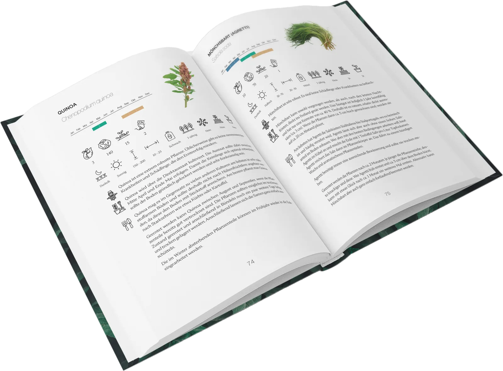
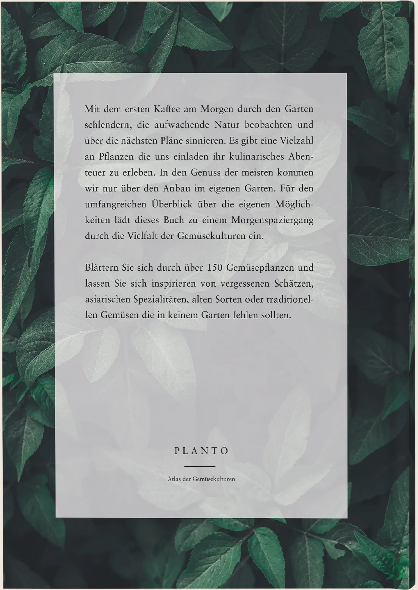
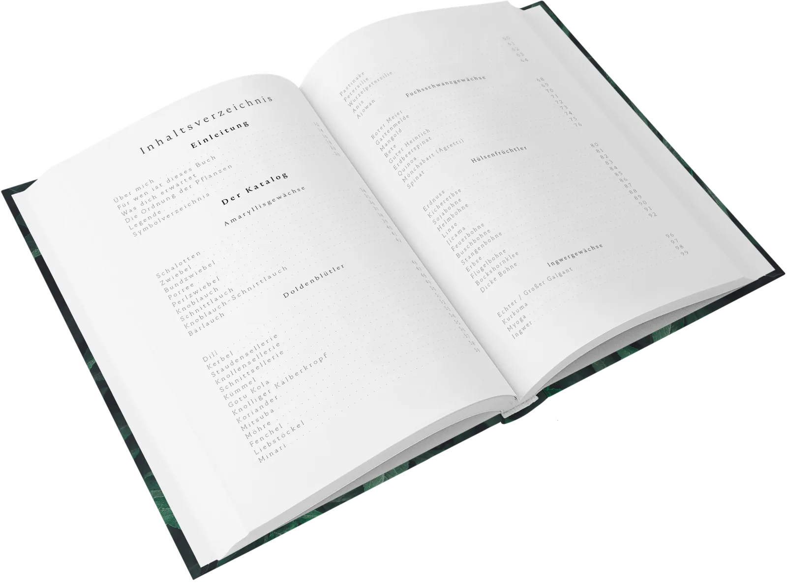

Planto
Atlas der Gemüsekulturen
A book I wrote, designed and fully typeset, as enjoyable to leaf through on a winter morning as it is useful in planting season.




The book
With my first book, Planto – Atlas der Gemüsekulturen, I wrote, designed and fully typeset a guide to the diversity of edible plants.
It is meant for hobby gardeners and anyone curious about growing their own food: enough practical knowledge to get started, with space left for personal discovery.
The look
A clean, minimal design language: generous white space, a calm typographic hierarchy and a restrained colour palette for clarity and focus. Cover and interior follow the book’s philosophy: functional yet elegant, approachable but not simplistic.
Structure
Editorial design, typography and information structuring combine into one reading experience, somewhere between reference book and personal inspiration.